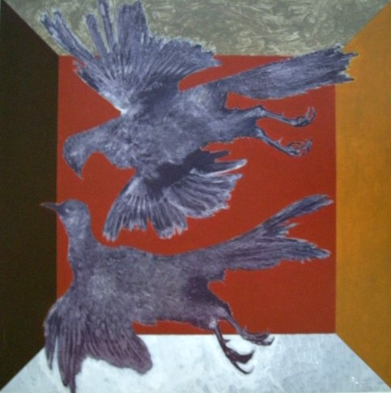

Ulrico Schettini (Montefiore)
b.1932
Artist Biography
Ulrico Schettini was born in Cosenza, in the Italian Marches. After studying art at Pesaro, Paris and Rome he settled in England in 1958. An academically-inclined artist, during the 1960s and early 1970s he lectured at Hull College of Arts and Crafts, Carlisle College of Art and Design, Hornsea College of Art, the City Literary Institute and King’ College London. He worked in New York in 1964 and from 1966-71 lectured annually in America under the auspices of the Association of American Colleges. Schettini’s early work was fiercely modernist, being “emotionally powerful” and displaying a chromatic austerity that “blends a basic outline of form with a free graphic improvisation within that form” (Art News and Review Jan 1959). Critics at the time equated his art with modern jazz movements. From the mid-1960s Schettini began producing more figurative work, in a strong expressive, dark style. Schettini first solo exhibition was at the experimental New Vision Gallery in London in 1958, followed by one in Newcastle. He then exhibited in London at the Drian Gallery in 1959 and the Institute for Contemporary Art in 1961. He had group shows in London, Paris and Milan and then had a major retrospective exhibition at the Municipal Art Gallery, Hull in 1966 which attracted international attention. About this time, though, despite the acclaim, he destroyed many works and disappeared to Italy to find himself again as an artist. He took ‘Montefiore’ as his professional name in homage to two potters he worked with there. A large exhibition of his subsequent work, which now included many ancient and archaeological influences, was given at the Café Royal, London in 1972 and a still more important exhibition at the Palazzo della Permanente, Milan in 1974. Wildensteins in New York also sold his work. Montefiore moved back to Italy in the 1970s and continues to exhibit there. His work underwent another dramatic shift in the 1980s. He turned to a wider variety of media – he is currently working on stained glass, metals and ceramics as well as painting – and shifted entirely to representational art. The main motive behind this was religious and he now mainly concentrates on large-scale commissions for Catholic institutions in Peru, Spain and Italy. He taught at the Academy of Fine Arts at Brera, Milan. Schettini’s work is held by Northwestern College, Orange City in Indiana and California University of Pennsylvania, South Australia House, London and other public collections.

Fagiani, 1974